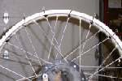
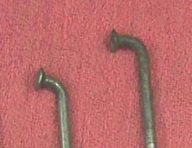

On a spoked wheel, the spokes hold the rim round and centred. When one spoke loosens, its neighbours carry more load and can break, the rim goes out of true, and a loose spoke end can cut the inner tube. Heavy loads, potholes and new wheels that have not settled cause most loose spokes. A clicking or pinging from the wheel when riding is a common sign.
Is it safe to ride?
With care if only one or two spokes are slightly loose and the wheel runs true; tighten them soon. If spokes are broken, several are loose, or the wheel wobbles, do not ride.
Quick checks first
- Lift the wheel and tap each spoke near the rim with a spanner: clear ring or dull thud?
- Squeeze crossing pairs: does any move easily?
- Look for broken spokes, often at the bend near the hub.
- Spin the wheel and watch for wobble.
Diagnose it step by step
1Is any spoke broken?
- Yes: go to step 5.
- No: go to step 2.
2How many spokes are loose (dull sound, move when squeezed)?
- One to a few: go to step 3.
- Many, all round the wheel: go to step 5.
3Check runout (Check a wheel for runout). Is the rim dented or badly out of true?
- Yes, dented or bent: tightening spokes will not fix it. Go to Rim is dented or cracked.
- No: go to step 4.
4Tighten the loose spokes a quarter turn at a time, checking runout as you go (Check and tighten spokes). Do they all ring evenly and the wheel run true?
- Yes: done. Check again after a few weeks.
- No: hand it to a wheel builder.
5Broken spokes or many loose spokes: the wheel needs proper work.
- One broken spoke: fit a new spoke of the same length and bend; the tyre and tube must come off to reach the nipple. Then true the wheel.
- Several broken or loose: have the wheel respoked and trued by a wheel builder. Old spokes are rarely reused.
6Have you had punctures on the rim side of the tube?
- Yes: a spoke end may stick through the nipple. Remove the tyre, file spoke ends flat, fit good rim tape (Repair a puncture in an inner tube).
- No: check spokes again before fitting any new tyre.
What happens if you ignore it: each loose spoke loads its neighbours, they break in turn, and the rim can fold under braking.
Causes, most likely first
| Cause | How to confirm | Fix |
|---|---|---|
| Spokes settled or vibrated loose | Dull sound, wheel still true | Tighten spokes |
| Pothole impact or overload | Several loose, rim out of true | Tighten and true, or wheel builder |
| Broken spoke | Visible break, often at hub bend | New spoke and true |
| Dented rim | Runout over limit with tight spokes | New rim, respoke |